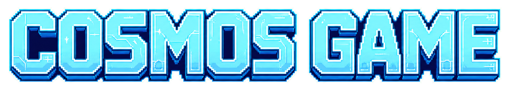
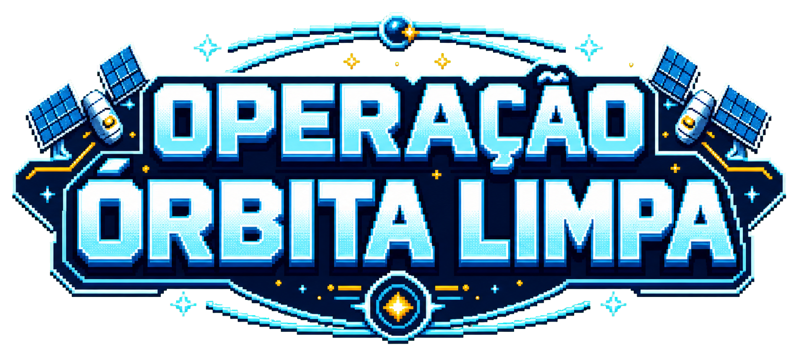
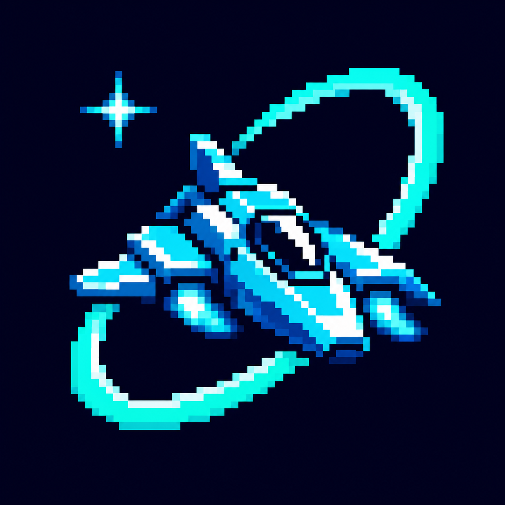
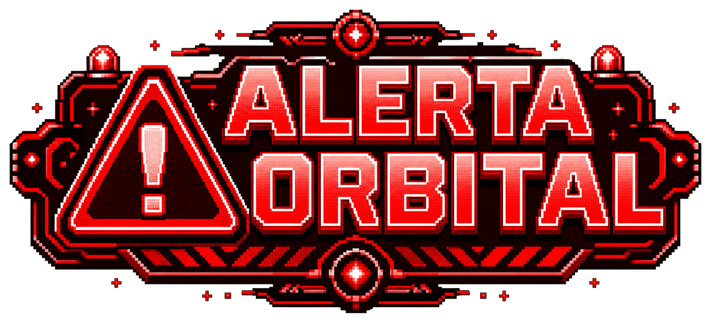

limpe as órbitas e proteja o futuro

preparando missão...

O espaço ao redor da Terra está ficando cheio de lixo. Satélites quebrados, partes de foguetes e pequenos fragmentos atravessam as órbitas em alta velocidade. Cada colisão cria ainda mais detritos e ameaça novas missões. Escolha sua nave, limpe as três regiões e impeça que o Campo Kessler tome conta do céu.
Cada nave possui uma vantagem diferente.

Vida:
Vantagem: possui um coração adicional.

Vida:
Vantagem: possui um intervalo de tiro menor.

Vida:
Habilidade: barreira por 3 segundos.
Recarga: 15 segundos.

Vida:
Habilidade: dano dobrado por 6 segundos.
Recarga: 15 segundos.
fase 1
detritos metálicos e satélites quebrados ocupam esta região
fase: Órbita Baixa
score: 0
vidas:
habilidade: pronta
Pilote sua nave por cinco faixas, destrua os detritos orbitais e derrote o chefe de cada região. Complete as três regiões para concluir a missão.
O tiro atinge apenas os alvos que estão na mesma faixa da nave.
A campanha passa por Órbita Baixa, Órbita Média e Campo Kessler.
Cada detrito destruído vale 1 ponto. O score da fase volta a zero na região seguinte, mas o score total é acumulado até o fim da campanha.
Barreira e Impacto recarregam em 15 segundos. Escudo e Rajada têm vantagens passivas, por isso a tecla E não ativa nada nelas.
Dica: acompanhe no painel a região atual, o score, suas vidas e o estado da habilidade.
Projeto desenvolvido por:
Henri (Desenvolvimento)
Isaque (Apresentação)
Christopher (Documentação)
Guilherme (Pesquisas)
A região foi limpa com sucesso.
score total: 0
Parabéns! Você limpou as três regiões e protegeu as órbitas da Terra.
score total: 0